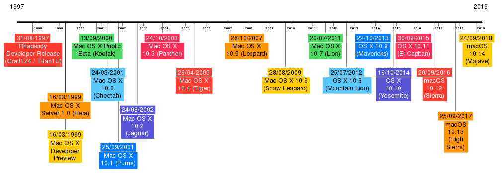

The history of macOS, Apple's current Mac operating system originally named Mac OS X until 2012 and then OS X until 2016, began with the company's project to replace its "classic" Mac OS. That system, up to and including its final release Mac OS 9, was a direct descendant of the operating system Apple had used in its Macintosh computers since their introduction in 1984. However, the current macOS is a Unix operating system built on technology that had been developed at NeXT from the 1980s until Apple purchased the company in early 1997.Although it was originally marketed as simply "version 10" of the Mac OS (indicated by the Roman numeral "X"), it has a completely different codebase from Mac OS 9, as well as substantial changes to its user interface. The transition was a technologically and strategically significant one. To ease the transition, versions through 10.4 were able to run Mac OS 9 and its applications in a compatibility layer.It was first released in 1999 as Mac OS X Server 1.0, with a widely released desktop version—Mac OS X 10.0—following in March 2001. Since then, several more distinct desktop and server editions of macOS have been released. Starting with Mac OS X 10.7 Lion, macOS Server is no longer offered as a separate operating system; instead, server management tools are available for purchase as an add-on. Starting with the Intel build of Mac OS X 10.5 Leopard, most releases have been certified as Unix systems conforming to the Single Unix Specification. macOS has retained the major version number 10 throughout its development history to date; releases of macOS have also been named after big cats (versions 10.0–10.8) or locations in California (10.9–present). 
The heritage of what would become macOS had originated at NeXT, a company founded by Steve Jobs following his departure from Apple in 1985. There, the Unix-like NeXTSTEP operating system was developed, and then launched in 1989. The kernel of NeXTSTEP is based upon the Mach kernel, which was originally developed at Carnegie Mellon University, with additional kernel layers and low-level user space code derived from parts of BSD. Its graphical user interface was built on top of an object-oriented GUI toolkit using the Objective-C programming language.Throughout the early 1990s, Apple had tried to create a "next-generation" OS to succeed its classic Mac OS through the Taligent, Copland and Gershwin projects, but all of them were eventually abandoned.This led Apple to purchase NeXT in 1996, allowing NeXTSTEP, then called OPENSTEP, to serve as the basis for Apple's next generation operating system.[18] This purchase also led to Steve Jobs returning to Apple as an interim, and then the permanent CEO, shepherding the transformation of the programmer-friendly OPENSTEP into a system that would be adopted by Apple's primary market of home users and creative professionals. The project was first code named "Rhapsody" and then officially named Mac OS X.
Apple rapidly developed several new releases of Mac OS X.Siracusa's review of version 10.3, Panther, noted "It's strange to have gone from years of uncertainty and vaporware to a steady annual supply of major new operating system releases."Version 10.4, Tiger, reportedly shocked executives at Microsoft by offering a number of features, such as fast file searching and improved graphics processing, that Microsoft had spent several years struggling to add to Windows with acceptable performance.As the operating system evolved, it moved away from the classic Mac OS, with applications being added and removed.Considering music to be a key market, Apple developed the iPod music player and music software for the Mac, including iTunes and GarageBand.Targeting the consumer and media markets, Apple emphasized its new "digital lifestyle" applications such as the iLife suite, integrated home entertainment through the Front Row media center and the Safari web browser. With increasing popularity of the internet, Apple offered additional online services, including the .Mac, MobileMe and most recently iCloud products. It later began selling third-party applications through the Mac App Store. Newer versions of Mac OS X also included modifications to the general interface, moving away from the striped gloss and transparency of the initial versions. Some applications began to use a brushed metal appearance, or non-pinstriped titlebar appearance in version 10.4.In Leopard, Apple announced a unification of the interface, with a standardized gray-gradient window style.In 2006, the first Intel Macs released used a specialized version of Mac OS X 10.4 Tiger.A key development for the system was the announcement and release of the iPhone from 2007 onwards. While Apple's previous iPod media players used a minimal operating system, the iPhone used an operating system based on Mac OS X, which would later be called "iPhone OS" and then iOS. The simultaneous release of two operating systems based on the same frameworks placed tension on Apple, which cited the iPhone as forcing it to delay Mac OS X 10.5 Leopard.However, after Apple opened the iPhone to third-party developers its commercial success drew attention to Mac OS X, with many iPhone software developers showing interest in Mac development.In 2007, Mac OS X 10.5 Leopard was the sole release with universal binary components, allowing installation on both Intel Macs and select PowerPC Macs.It is also the final release with PowerPC Mac support. Mac OS X 10.6 Snow Leopard was the first version of OS X to be built exclusively for Intel Macs, and the final release with 32-bit Intel Mac support.The name was intended to signal its status as an iteration of Leopard, focusing on technical and performance improvements rather than user-facing features; indeed it was explicitly branded to developers as being a 'no new features' release.Since its release, several OS X or macOS releases (namely OS X Mountain Lion, OS X El Capitan and macOS High Sierra) follow this pattern, with a name derived from its predecessor, similar to the 'tick-tock model' used by Intel. In two succeeding versions, Lion and Mountain Lion, Apple moved some applications to a highly skeuomorphic style of design inspired by contemporary versions of iOS, at the same time simplifying some elements by making controls such as scroll bars fade out when not in use.This direction was, like brushed metal interfaces, unpopular with some users, although it continued a trend of greater animation and variety in the interface previously seen in design aspects such as the Time Machine backup utility, which presented past file versions against a swirling nebula, and the glossy translucent dock of Leopard and Snow Leopard.In addition, with Mac OS X 10.7 Lion, Apple ceased to release separate server versions of Mac OS X, selling server tools as a separate downloadable application through the Mac App Store. A review described the trend in the server products as becoming "cheaper and simpler... shifting its focus from large businesses to small ones."
In 2012, with the release of OS X 10.8 Mountain Lion, the name of the system was shortened from Mac OS X to OS X. That year, Apple removed the head of OS X development, Scott Forstall, and design was changed towards a more minimal direction.Apple's new user interface design, using deep color saturation, text-only buttons and a minimal, 'flat' interface, was debuted with iOS 7 in 2013. With OS X engineers reportedly working on iOS 7, the version released in 2013, OS X 10.9 Mavericks, was something of a transitional release, with some of the skeuomorphic design removed, while most of the general interface of Mavericks remained unchanged.The next version, OS X 10.10 Yosemite, adopted a design similar to iOS 7 but with greater complexity suitable for an interface controlled with a mouse.From 2012 onwards, the system has shifted to an annual release schedule similar to that of iOS. It also steadily cut the cost of updates from Snow Leopard onwards, before removing upgrade fees altogether from 2013 onwards.Some journalists and third-party software developers have suggested that this decision, while allowing more rapid feature release, meant less opportunity to focus on stability, with no version of OS X recommendable for users requiring stability and performance above new features.Apple's 2015 update, OS X 10.11 El Capitan, was announced to focus specifically on stability and performance improvements.
In 2016, with the release of macOS 10.12 Sierra, the name was changed from OS X to macOS to streamline it with the branding of Apple's other primary operating systems: iOS, watchOS, and tvOS.macOS 10.12 Sierra's main features are the introduction of Siri to macOS, Optimized Storage, improvements to included applications, and greater integration with Apple's iPhone and Apple Watch. The Apple File System (APFS) was announced at the Apple Worldwide Developers Conference in 2016 as a replacement for HFS+, a highly criticized file system.Apple previewed macOS 10.13 High Sierra at the 2017 Worldwide Developers Conference, before releasing it later that year.When running on solid state drives, it uses APFS, rather than HFS+.Its successor, macOS 10.14 Mojave, was released in 2018, adding a dark user interface option and a dynamic wallpaper setting.It was succeeded by macOS 10.15 Catalina in 2019, which replaces iTunes with separate apps for different types of media, and introduces the Catalyst system for porting iOS apps.